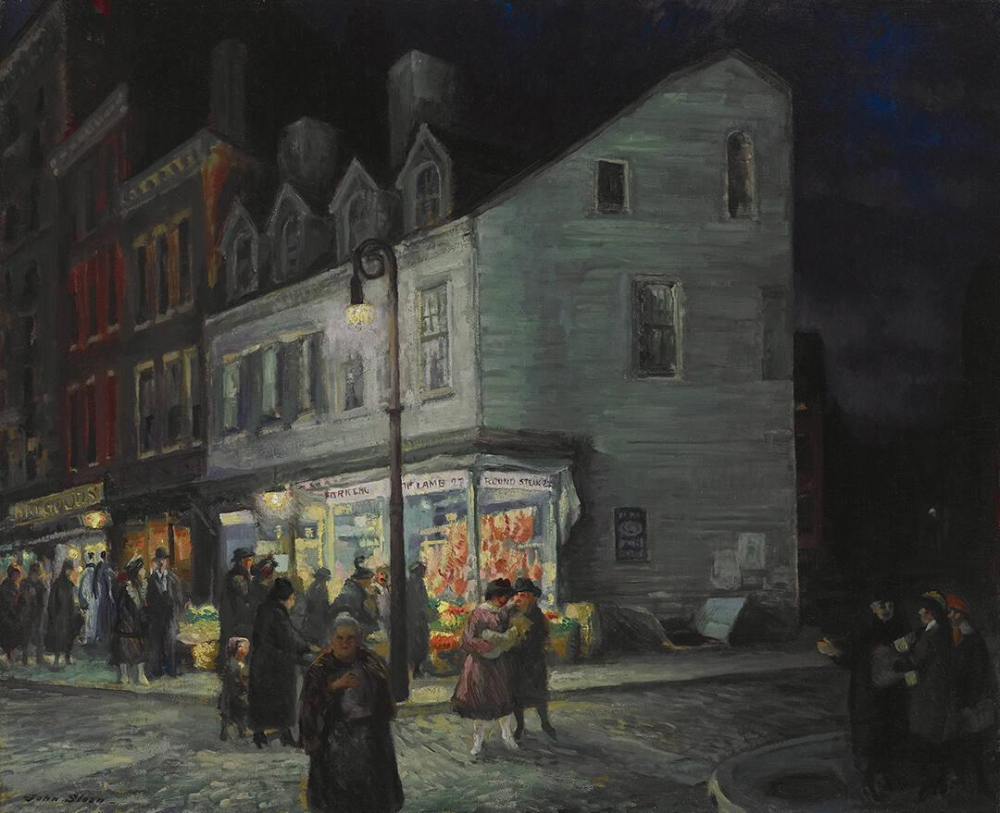

B1 · Society
The Bread Code
A sentence that means nothing to anyone else, and the night it was finally used — by the girl who didn't have one.
Play the audio and follow along, then read it again on your own. Tap or hover over a highlighted word to see what it means.
My fifteen-year-old daughter and I have a code phrase. If she texts me “Have you bought the bread yet?”, I call her five minutes later, make up an emergency, and go pick her up. No questions. No lectures. On Saturday she sent it at 11:47 at night. When I got there, two girls got into the car.
We agreed on it when she turned thirteen. She had started going to birthday parties, to sleepovers, to friends' houses I had never been inside. So I told her: “If you ever want to leave somewhere and you don't know how, text me ‘have you bought the bread yet?’. I'll call, I'll invent an excuse, and I'll come get you. And I won't ask you a single thing in the car.”
Two years went by and the code was never used. I had almost forgotten about it. On Saturday she went to a classmate's birthday party on the other side of town. I dropped her off at eight. She said goodbye, and her friend Megan was already waiting for her at the gate.
At 11:47 the phone buzzed on the arm of the couch. “Have you bought the bread yet?” I stood up so fast that my wife woke up. At 11:52 I called. “Hannah, Grandma isn't feeling well. I'm coming to pick you up right now.” She answered loudly, so that anybody standing near her could hear it: “Okay, Dad. I'll be out front.”
I pulled up at 12:06. She was waiting by the gate. Next to her was Megan, arms crossed, shaking. Three guys, a good deal older than the kids at the party, were leaning against the wall and looking at my car. The two girls got into the back seat together without saying a word.

The rule was that I don't ask questions, so I didn't ask. I turned the radio down low and drove. At the first red light I looked in the rearview mirror. Hannah was holding Megan's hand.
It was Hannah who spoke first. “Dad, the code wasn't for me. There was a guy there, maybe twenty-two, and he wouldn't leave Megan alone. He wanted to take her somewhere in his car. She said no about five times. Megan doesn't have a code with her dad. She was scared to call him. She thought it would only make things worse. So I sent mine.”
I asked Megan whether she wanted to go home. She said, very quietly, “My dad doesn't know I stayed out this late. He's going to be so mad.” She slept at our house, on a mattress on the floor of Hannah's room. My wife made the two of them hot chocolate at twenty to one in the morning.
Sunday morning I drove Megan home. Her father, Mr. Carter, opened the front door looking anything but friendly — a big man, with the arms of somebody who works with his hands. He started in on her before I had even turned the engine off. I asked whether I could talk to him first, and I told him everything: the party, the men against the wall, Hannah's code. He got quieter and quieter. Then I said something I had never said to another father. “Dale, your daughter got out of there because she had a way out. If she had been afraid to call you, she would have stayed.”
He didn't answer. He looked at his daughter, who was standing by the door staring at the ground. He ran his hand over his face. He said “thank you” without looking at me, and he went inside with her and shut the door.
Sunday night my phone buzzed again. A number I didn't know. “This is Dale, Megan's dad. How does this bread thing work?” So I explained it. A sentence that sounds like nothing. You call, you invent an emergency, you go get her. And you don't ask her anything on the way. He took a while to write back. “Ours is going to be ‘have you taken the trash out yet?’. She picked it.”
My code went two years without being used. When it was finally used, it wasn't my daughter who used it. It was her friend, who didn't have one. Agree on a phrase with your kid tonight. They don't have to explain. You don't ask questions. You just go. Because sometimes they won't use it for themselves. They'll use it for somebody who has nobody to call.
Key Vocabulary
- code phrase an ordinary-sounding sentence agreed in advance, which means something else to the person who hears it
- to text to send somebody a message on a phone
- to make something up to invent something that is not true
- lecture a long serious talk telling somebody what they did wrong
- to pick somebody up to collect somebody by car
- to agree on something to decide something together
- to turn (an age) to reach that age on your birthday
- sleepover a night a young person spends at a friend's house
- excuse a reason you give for doing something, whether or not it is the true one
- to go by to pass (of time)
- to drop somebody off to take somebody somewhere by car and leave them there
- gate the door in a fence or wall in front of a house
- couch a sofa (American English)
- to buzz to vibrate and make a low sound
- out front outside, at the front of a building
- to pull up to arrive somewhere in a car and stop
- arms crossed with each arm folded over the other, often from cold or fear
- to shake to tremble, from cold or from fear
- a good deal considerably; much
- to lean against to rest your body against a wall or a car
- back seat the seat behind the driver
- rearview mirror the mirror a driver uses to see the road, and the back seat, behind them
- to leave somebody alone to stop bothering somebody
- scared afraid
- to make things worse to cause a bad situation to become worse
- mad angry (American English)
- mattress the thick soft part of a bed, here laid straight on the floor
- anything but the opposite of; not at all
- to start in on somebody to begin criticizing somebody loudly
- engine the motor of a car
- a way out a means of leaving a situation
- to stare at to look at something for a long time without moving your eyes
- to run your hand over your face to pass your hand slowly over your face, from tiredness or emotion
- to shut to close
- to write back to answer a message
- to pick to choose
The Bread Code — B1 · Society · Renan the Teacher, English Language Academy · https://renangrossi.github.io/englishclasses/reading/b1/the-bread-code.html
Interactive Exercises
Practice
Complete each exercise, then click Submit to see your score and an explanation for every answer.
Speaking & Writing
Discussion
There are no right answers here — use these to practice speaking, or write a short answer to each.
- The rule is that the parent asks no questions. Why would a code phrase stop working without that part?
- Megan was more afraid of her father's reaction than of the man at the party. What does that tell you about how the two fathers had each behaved before that night?
- Would you have broken the no-questions rule in the car? Say why, or why not.
- Megan chose her family's phrase herself. Why might that matter more than which phrase it is?
- Write about 150 words about an arrangement you have with somebody in your family — a phrase, a signal, or a promise — and explain how it works and when it is used.